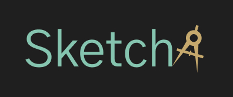

Polymatica
About
Polymatica is a Russian data analytics software. They were working on a redesign, I was one of 3 freelance UX Designers on this project.
The aim behind the Sketcha software was to eliminate mode changes and allow the user to just click anywhere and prompt the user with the neccessary options. This software had to be different - no swapping between modes, just a very self-explanatory and intuitive design.
Branding
I was told to play around with a logo. The software did not have a name yet, "Sketcher" was just the working title but this had to do to get some look and feel for the brand. We aimed for a modern look. I wanted the logo to represent the basics of floor plan sketching and implemented a divider caliper into the logo.
User Interface

For this project, I created a new UI Kit from scratch. The buttons were purposely large to allow for an easy touch target. The icons needed to be easy to understand as space was limited for additional labels.
Transitions
Since the user interface allowed for the buttons to pop up anywhere the user clicks, it needed to be clear where the options popped up. That meant that they couldn't just appear, they needed a clear transition. It also needed to be quick, so that the user doesn't wait too long to see their options.
The dot in the middle marks the point the user tapped on.
Based on what element of the floor plan was selected, the relevant options popped up. The ‘add window’ option only appears when the user selects an outdoor wall, but not when they select an indoor wall.
Touch Gestures
Since the aim of the project was to reduce tools and mode changes, I looked into different gestures. Before implementing them, I did some research on existing users by showing them a static screen on a tablet and asking them how they’d draw a wall or move a window. The results were very straight-forward so I implemented those in the final designs.
Adding floors
The left hand side of the navigation shows the user what floor they're currently working on. Selecting the plus icon will add a new floor. Floors can be reordered by simply dragging the floor buttons to above and below one another.
Adding stairs will automatically add a floor above the current floor, which is simultaniously added to the navigation, as you can see in the video.
Disclaimer
It was decided not to build this application since the development for the 3D floor plan software was already quite far ahead and met a similar target audience.